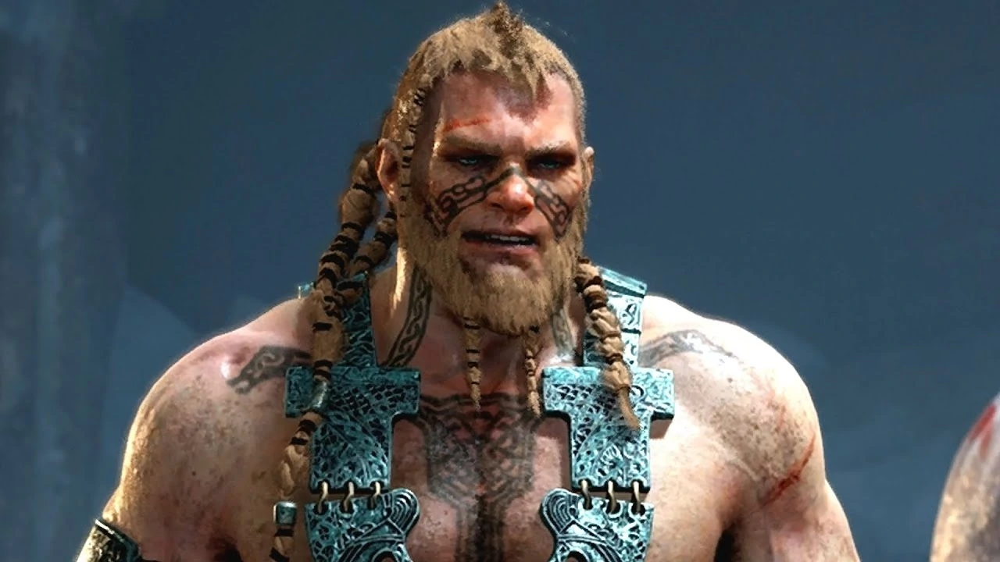

Magni
 Apesar de ambos serem crianças não mais altas que arbustos na época, Magni e Modi foram os únicos Aesir poderosos o suficiente para libertar seu pai de debaixo da perna do morto jötunn Hrungnir. No entanto, todo o crédito pelo resgate de Thor foi dado a Magni (que Mimir atribui a Magni ser mais loiro).
Em sua juventude,
Magni rapidamente passou a ser considerado o filho favorito de Thor. Modi passou a se ressentir dele e de seu pai, embora não de maneira extrema.
Durante a Guerra Aesir-Vanir, Magni, junto com seu irmão, participou da batalha. Juntos, eles lutaram e mataram a deusa Vanir Nerthus.
Magni e Modi são convocados por Odin e ordenados a ajudar Baldur em sua busca por Kratos, após o primeiro encontro fracassado do primeiro com o deus grego. Eles visitam o embaixador preso da tribo Aesir, Mimir. Buscando saber a localização de Kratos e Atreus, bem como como lidar com eles. No entanto,
Mimir não sabe a localização deles e se recusa a obrigá-los, mesmo depois que Baldur promete argumentar com Odin assim que ele retornar a Asgard.
Com Modi, Magni é capaz de rastrear Kratos e Atreus no cadáver de Thamur, observando que o martelo que eles moveram "... não caiu sozinho.
" Magni finalmente encontra Kratos e Atreus quando ele cai no chão de cima enquanto lutava contra um ogro. Jogando o cadáver da fera para o lado, ele ordena que o par se renda, ao que Kratos prontamente se recusa, iniciando uma luta. Após uma longa e cansativa batalha, Kratos eventualmente domina Magni,
e enterra selvagemente a lâmina de seu machado no fundo do crânio de Magni, matando-o instantaneamente. Modi fica horrorizado ao testemunhar a morte de seu irmão e rapidamente sucumbe ao medo e foge da batalha.